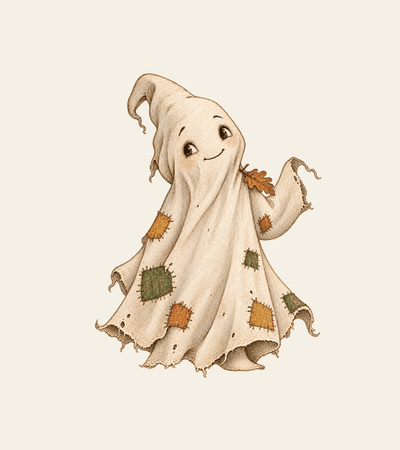

Vorbereiten
Spielkarte ausdrucken. Bleistift und geladenes Handy einpacken. Einmal den QR-Code öffnen.
„Wie weit noch?“ Die Frage kommt meistens nach den ersten Metern. Diesmal wartet am Weg ein Gespenst, dem sieben Flicken fehlen.
Eine schaurig schöne Waldrallye für Kinder von 4 bis 7 Jahren und ihre Erwachsenen.
Für euren Familienausflug, mit Freunden oder zum Kindergeburtstag.

„Durch das Loch am Bauch zieht es fürchterlich.“
Der Sturm hat Raschels Laken zerrissen. Sieben Flicken sind zwischen die Bäume geflogen. Und mit ihnen die Buchstaben für ein geheimnisvolles Schloss.
Jetzt braucht das Waldgespenst eure Hilfe. Ihr folgt seinen Nachrichten, sucht gemeinsam nach Hinweisen und entdeckt den Wald mit Händen, Füßen, Nase und Ohren.
Jede gelöste Aufgabe bringt einen Flicken zurück. Jeder Flicken verrät einen Buchstaben. Nach einer gelösten Aufgabe erscheint ein großes Geschichtenbild. Erst am Ende setzt ihr das Wort zusammen.
Ob ihr Raschel wieder ganz bekommt?
Die Stimme begleitet euch von Aufgabe zu Aufgabe. Gesucht, gefühlt und gerätselt wird draußen.
Hört hier den Einstieg in eure Waldmission.
Ihr braucht keine festgelegte Route. Wählt einen sicheren Weg und entscheidet selbst, an welchen Plätzen ihr die Aufgaben löst.
Spielkarte ausdrucken. Bleistift und geladenes Handy einpacken. Einmal den QR-Code öffnen.
Seine Nachricht hören, den Waldauftrag erledigen und das Lösungswort auf die Karte schreiben. Dann den Code eingeben.
Der richtige Code bringt einen Flicken zurück. Aus sieben Buchstaben entsteht das letzte Lösungswort.
Einmal kaufen, als Familie spielen. Der geplante Inhalt:
Mitnehmen: Spielkarte, Bleistift und Handy. Bei feuchtem Wetter schützt eine Klarsichthülle eure Karte.
Nein. Die Geschichte führt euch zu Entdeckungen, die ihr am Weg macht. Die Flicken erscheinen digital nach einer richtigen Lösung.
Die Rallye ist für unterschiedliche Wälder entworfen. Ihr braucht einen sicheren Weg mit Bäumen und gewöhnlichen losen Waldstücken wie Zweigen, Blättern oder Nadeln. Eine feste Route oder bestimmte Baumart ist nicht vorgesehen.
Das Handy spielt Raschels Nachrichten ab und prüft die Lösungswörter. Die Kinder schleichen, suchen, zeichnen, fühlen und lauschen im echten Wald. Nach der Nachricht kommt das Handy wieder in die Tasche.
Die Rallye ist für gemeinsames Spielen mit Erwachsenen gedacht. Helft bei der Bedienung, beim Lesen und beim Schreiben. Ihr teilt die Aufgaben so auf, dass jedes Kind etwas beitragen kann.
Eine Klarsichthülle schützt die Spielkarte. Für Zeichnungen und Rindenabdrücke nehmt ihr sie kurz heraus. Wählt Wetter und Wege, bei denen ihr sicher und gern draußen seid; bei Sturm spielt ihr nicht.
Die Offline-Funktion wird vor dem Verkaufsstart geprüft. Bis sie bestätigt ist, planen wir keinen Ausflug ohne Empfang mit dieser Version.
Der Kauf gilt für eure Familie und für private Anlässe wie den eigenen Kindergeburtstag. Raschel, die Geschichte, die Bilder und die Stimme bleiben bei Waldmomente. Weitergabe, Weiterverkauf und Veröffentlichung der Dateien, des Zugangs und der Lösungen sind nicht enthalten. Für Gruppen und Einrichtungen schreibt vorher an info@waldmomente.me. Fotos von eurem Ausflug zeigt ihr gern, die Lösungen und Geschichtenbilder bleiben dabei im Spiel.